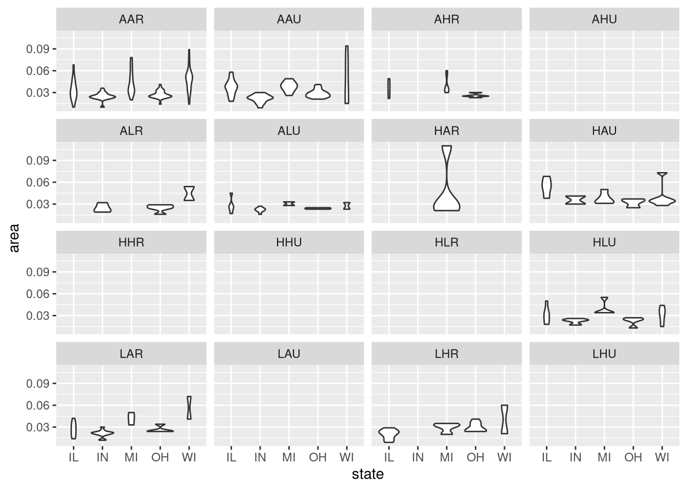
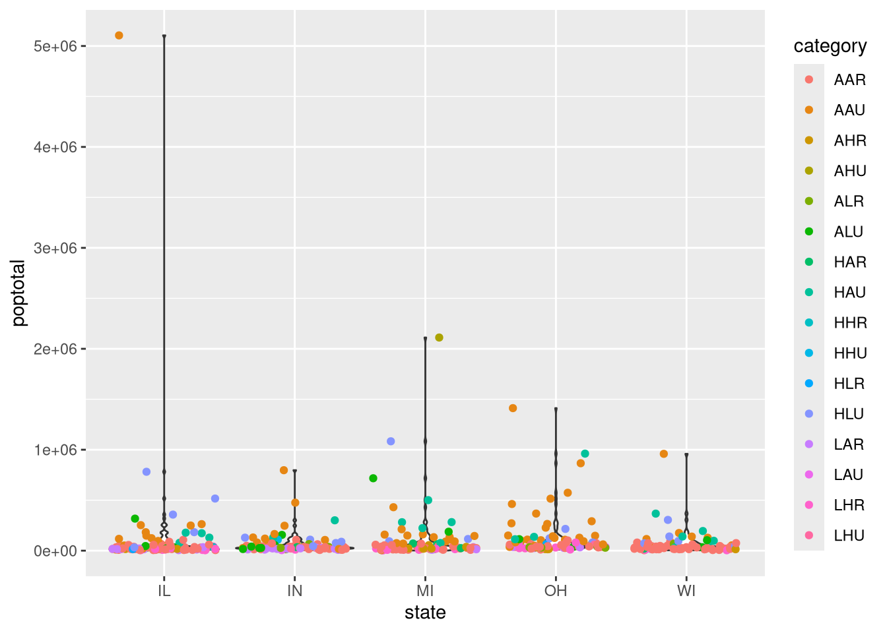

fav_food <- c("Sushi", "Chicken Makhani", "Mushroom Ravioli", "Mint Mocha Coffee", "Naan")GA6
3 Main assignment:
3.1 R Basics
Create a character vector
fav_foodwith five names of your favorite food. Replace third element of the vector with a bird name and extract first and fifth element.Load the
tidyversepackage. We have seen in the class that when we load thetidyversepackage, we see many warnings. Use the code chunk option to hide the warning. Read yourmetadata.tsvfile from thegarrigos-data/metadirectory and save it as objectmetadata. Write down the data structure of themetadata, number of variables, and rows.library(tidyverse)── Attaching core tidyverse packages ──────────────────────── tidyverse 2.0.0 ── ✔ dplyr 1.1.4 ✔ readr 2.1.5 ✔ forcats 1.0.1 ✔ stringr 1.6.0 ✔ ggplot2 4.0.0 ✔ tibble 3.3.0 ✔ lubridate 1.9.4 ✔ tidyr 1.3.1 ✔ purrr 1.2.0 ── Conflicts ────────────────────────────────────────── tidyverse_conflicts() ── ✖ dplyr::filter() masks stats::filter() ✖ dplyr::lag() masks stats::lag() ℹ Use the conflicted package (<http://conflicted.r-lib.org/>) to force all conflicts to become errorsmetadata <- read_tsv(file = "/fs/ess/PAS2880/users/bateman139/garrigos-data/metadata.tsv")Rows: 22 Columns: 3 ── Column specification ──────────────────────────────────────────────────────── Delimiter: "\t" chr (3): sample_id, time, treatment ℹ Use `spec()` to retrieve the full column specification for this data. ℹ Specify the column types or set `show_col_types = FALSE` to quiet this message.metadata# A tibble: 22 × 3 sample_id time treatment <chr> <chr> <chr> 1 ERR10802882 10dpi cathemerium 2 ERR10802875 10dpi cathemerium 3 ERR10802879 10dpi cathemerium 4 ERR10802883 10dpi cathemerium 5 ERR10802878 10dpi control 6 ERR10802884 10dpi control 7 ERR10802877 10dpi control 8 ERR10802881 10dpi control 9 ERR10802876 10dpi relictum 10 ERR10802880 10dpi relictum # ℹ 12 more rowsData structure: tibble (data frame)
Number of variables: 3
Number of rows: 22
In the
metadataobject, replace thedpiwith_dpiof thetimevariable andcathemeriumwithcathof thetreatmentvariable.metadata <- metadata|> mutate( time = sub(pattern = "dpi", replacement = "_dpi", x = time) )
metadata <- metadata|>
mutate(
treatment = sub(pattern = "cathemerium", replacement = "cath", x = treatment)
)head(metadata)# A tibble: 6 × 3
sample_id time treatment
<chr> <chr> <chr>
1 ERR10802882 10_dpi cath
2 ERR10802875 10_dpi cath
3 ERR10802879 10_dpi cath
4 ERR10802883 10_dpi cath
5 ERR10802878 10_dpi control
6 ERR10802884 10_dpi control 3.2 Data wrangling
Instead of creating new objects, always pipe your output unless explicitly stated.
List all the datasets available in the
ggplot2package. Read the data from inbuilt- datasetmidwest. Save it as an objectmidwest_datasetsand use themidwest_datasetsto answer all the question afterwards.library(ggplot2) data(package = "ggplot2")Data sets in package ‘ggplot2’: diamonds Prices of over 50,000 round cut diamonds economics US economic time series economics_long US economic time series faithfuld 2d density estimate of Old Faithful data luv_colours 'colors()' in Luv space midwest Midwest demographics mpg Fuel economy data from 1999 to 2008 for 38 popular models of cars msleep An updated and expanded version of the mammals sleep dataset presidential Terms of 12 presidents from Eisenhower to Trump seals Vector field of seal movements txhousing Housing sales in TXmidwest_datasets <- midwestFilter the rows with
poptotal > 30000andpopdensity > 800.str(midwest_datasets)tibble [437 × 28] (S3: tbl_df/tbl/data.frame) $ PID : int [1:437] 561 562 563 564 565 566 567 568 569 570 ... $ county : chr [1:437] "ADAMS" "ALEXANDER" "BOND" "BOONE" ... $ state : chr [1:437] "IL" "IL" "IL" "IL" ... $ area : num [1:437] 0.052 0.014 0.022 0.017 0.018 0.05 0.017 0.027 0.024 0.058 ... $ poptotal : int [1:437] 66090 10626 14991 30806 5836 35688 5322 16805 13437 173025 ... $ popdensity : num [1:437] 1271 759 681 1812 324 ... $ popwhite : int [1:437] 63917 7054 14477 29344 5264 35157 5298 16519 13384 146506 ... $ popblack : int [1:437] 1702 3496 429 127 547 50 1 111 16 16559 ... $ popamerindian : int [1:437] 98 19 35 46 14 65 8 30 8 331 ... $ popasian : int [1:437] 249 48 16 150 5 195 15 61 23 8033 ... $ popother : int [1:437] 124 9 34 1139 6 221 0 84 6 1596 ... $ percwhite : num [1:437] 96.7 66.4 96.6 95.3 90.2 ... $ percblack : num [1:437] 2.575 32.9 2.862 0.412 9.373 ... $ percamerindan : num [1:437] 0.148 0.179 0.233 0.149 0.24 ... $ percasian : num [1:437] 0.3768 0.4517 0.1067 0.4869 0.0857 ... $ percother : num [1:437] 0.1876 0.0847 0.2268 3.6973 0.1028 ... $ popadults : int [1:437] 43298 6724 9669 19272 3979 23444 3583 11323 8825 95971 ... $ perchsd : num [1:437] 75.1 59.7 69.3 75.5 68.9 ... $ percollege : num [1:437] 19.6 11.2 17 17.3 14.5 ... $ percprof : num [1:437] 4.36 2.87 4.49 4.2 3.37 ... $ poppovertyknown : int [1:437] 63628 10529 14235 30337 4815 35107 5241 16455 13081 154934 ... $ percpovertyknown : num [1:437] 96.3 99.1 95 98.5 82.5 ... $ percbelowpoverty : num [1:437] 13.15 32.24 12.07 7.21 13.52 ... $ percchildbelowpovert: num [1:437] 18 45.8 14 11.2 13 ... $ percadultpoverty : num [1:437] 11.01 27.39 10.85 5.54 11.14 ... $ percelderlypoverty : num [1:437] 12.44 25.23 12.7 6.22 19.2 ... $ inmetro : int [1:437] 0 0 0 1 0 0 0 0 0 1 ... $ category : chr [1:437] "AAR" "LHR" "AAR" "ALU" ...
midwest_datasets |>
filter(poptotal > 30000, popdensity > 800)# A tibble: 234 × 28
PID county state area poptotal popdensity popwhite popblack popamerindian
<int> <chr> <chr> <dbl> <int> <dbl> <int> <int> <int>
1 561 ADAMS IL 0.052 66090 1271. 63917 1702 98
2 564 BOONE IL 0.017 30806 1812. 29344 127 46
3 570 CHAMPA… IL 0.058 173025 2983. 146506 16559 331
4 571 CHRIST… IL 0.042 34418 819. 34176 82 51
5 574 CLINTON IL 0.029 33944 1170. 32688 1021 48
6 575 COLES IL 0.03 51644 1721. 50177 925 92
7 576 COOK IL 0.058 5105067 88018. 3204947 1317147 10289
8 579 DE KALB IL 0.038 77932 2051. 72968 2069 123
9 582 DU PAGE IL 0.02 781666 39083. 714905 15462 962
10 585 EFFING… IL 0.028 31704 1132. 31523 12 45
# ℹ 224 more rows
# ℹ 19 more variables: popasian <int>, popother <int>, percwhite <dbl>,
# percblack <dbl>, percamerindan <dbl>, percasian <dbl>, percother <dbl>,
# popadults <int>, perchsd <dbl>, percollege <dbl>, percprof <dbl>,
# poppovertyknown <int>, percpovertyknown <dbl>, percbelowpoverty <dbl>,
# percchildbelowpovert <dbl>, percadultpoverty <dbl>,
# percelderlypoverty <dbl>, inmetro <int>, category <chr>Select first 11 variables of the dataset. Create a new column named
asian_ameriinmidwest_datasetsobject by dividingpopasianbypopamerindianand sortasian_ameriin descending order. Save this output asnew_datasetobjectnew_dataset <- midwest_datasets |> filter(poptotal > 30000, popdensity > 800) |> select(1:11) |> mutate(asian_ameri = popasian / popamerindian) |> arrange(desc(asian_ameri)) new_dataset# A tibble: 234 × 12 PID county state area poptotal popdensity popwhite popblack popamerindian <int> <chr> <chr> <dbl> <int> <dbl> <int> <int> <int> 1 582 DU PAGE IL 0.02 781666 39083. 714905 15462 962 2 570 CHAMPA… IL 0.058 173025 2983. 146506 16559 331 3 599 JACKSON IL 0.036 61067 1696. 51991 6342 109 4 576 COOK IL 0.058 5105067 88018. 3204947 1317147 10289 5 741 TIPPEC… IN 0.03 130598 4353. 122013 2660 320 6 579 DE KALB IL 0.038 77932 2051. 72968 2069 123 7 715 MONROE IN 0.024 108978 4541. 102752 2835 216 8 615 MCDONO… IL 0.034 35244 1037. 32992 1254 65 9 1277 WASHTE… MI 0.041 282937 6901. 236390 31720 1076 10 609 LAKE IL 0.028 516418 18444. 450666 34771 1198 # ℹ 224 more rows # ℹ 3 more variables: popasian <int>, popother <int>, asian_ameri <dbl>- Compute the total mean population per state and name the mean column as
poptotal.
new_dataset |> group_by(state) |> summarise(poptotal = mean(poptotal))# A tibble: 5 × 2 state poptotal <chr> <dbl> 1 IL 238312. 2 IN 99446. 3 MI 210809. 4 OH 144208. 5 WI 132759.- Compute the total mean population per state and name the mean column as
3.3 Quarto and Data Visualization
In our class we created scatter plot, box plot and bar graph. For this assignment, you will create the violin plot by reading the ggplot2 documentation using the midwest_datasets.
Create the violin plot with
statein x-axis andareain y-axis. Facet the plot based on thecategory.midwest_datasets |> ggplot(aes(x = state, y = area)) + geom_violin() + facet_wrap(vars(category))Warning: Groups with fewer than two datapoints have been dropped. ℹ Set `drop = FALSE` to consider such groups for position adjustment purposes. Groups with fewer than two datapoints have been dropped. ℹ Set `drop = FALSE` to consider such groups for position adjustment purposes.Warning in max(data$density, na.rm = TRUE): no non-missing arguments to max; returning -InfWarning: Computation failed in `stat_ydensity()`. Caused by error in `$<-.data.frame`: ! replacement has 1 row, data has 0Warning: Groups with fewer than two datapoints have been dropped. ℹ Set `drop = FALSE` to consider such groups for position adjustment purposes. Groups with fewer than two datapoints have been dropped. ℹ Set `drop = FALSE` to consider such groups for position adjustment purposes. Groups with fewer than two datapoints have been dropped. ℹ Set `drop = FALSE` to consider such groups for position adjustment purposes.Warning in max(data$density, na.rm = TRUE): no non-missing arguments to max; returning -InfWarning: Computation failed in `stat_ydensity()`. Caused by error in `$<-.data.frame`: ! replacement has 1 row, data has 0Warning: Groups with fewer than two datapoints have been dropped. ℹ Set `drop = FALSE` to consider such groups for position adjustment purposes.Warning in max(data$density, na.rm = TRUE): no non-missing arguments to max; returning -InfWarning: Computation failed in `stat_ydensity()`. Caused by error in `$<-.data.frame`: ! replacement has 1 row, data has 0Warning: Groups with fewer than two datapoints have been dropped. ℹ Set `drop = FALSE` to consider such groups for position adjustment purposes. Groups with fewer than two datapoints have been dropped. ℹ Set `drop = FALSE` to consider such groups for position adjustment purposes.Warning in max(data$density, na.rm = TRUE): no non-missing arguments to max; returning -InfWarning: Computation failed in `stat_ydensity()`. Caused by error in `$<-.data.frame`: ! replacement has 1 row, data has 0Warning: Groups with fewer than two datapoints have been dropped. ℹ Set `drop = FALSE` to consider such groups for position adjustment purposes. Groups with fewer than two datapoints have been dropped. ℹ Set `drop = FALSE` to consider such groups for position adjustment purposes. Groups with fewer than two datapoints have been dropped. ℹ Set `drop = FALSE` to consider such groups for position adjustment purposes.Warning in max(data$density, na.rm = TRUE): no non-missing arguments to max; returning -InfWarning: Computation failed in `stat_ydensity()`. Caused by error in `$<-.data.frame`: ! replacement has 1 row, data has 0Warning: Groups with fewer than two datapoints have been dropped. ℹ Set `drop = FALSE` to consider such groups for position adjustment purposes. Groups with fewer than two datapoints have been dropped. ℹ Set `drop = FALSE` to consider such groups for position adjustment purposes. Groups with fewer than two datapoints have been dropped. ℹ Set `drop = FALSE` to consider such groups for position adjustment purposes.Warning in max(data$density, na.rm = TRUE): no non-missing arguments to max; returning -InfWarning: Computation failed in `stat_ydensity()`. Caused by error in `$<-.data.frame`: ! replacement has 1 row, data has 0Warning in min(x): no non-missing arguments to min; returning InfWarning in max(x): no non-missing arguments to max; returning -InfWarning in min(d[d > tolerance]): no non-missing arguments to min; returning InfWarning in min(x): no non-missing arguments to min; returning InfWarning in max(x): no non-missing arguments to max; returning -InfWarning in min(d[d > tolerance]): no non-missing arguments to min; returning InfWarning in min(x): no non-missing arguments to min; returning InfWarning in max(x): no non-missing arguments to max; returning -InfWarning in min(d[d > tolerance]): no non-missing arguments to min; returning InfWarning in min(x): no non-missing arguments to min; returning InfWarning in max(x): no non-missing arguments to max; returning -InfWarning in min(d[d > tolerance]): no non-missing arguments to min; returning InfWarning in min(x): no non-missing arguments to min; returning InfWarning in max(x): no non-missing arguments to max; returning -InfWarning in min(d[d > tolerance]): no non-missing arguments to min; returning InfWarning in min(x): no non-missing arguments to min; returning InfWarning in max(x): no non-missing arguments to max; returning -InfWarning in min(d[d > tolerance]): no non-missing arguments to min; returning Inf
Create a violin plot again with
statein x-axis andpoptotalin y-axis. Add the jitter points on the plot and color just the points based on thecategory. Is this point color global or local mapping? please explain.
midwest_datasets |>
ggplot(aes(x = state, y = poptotal, )) +
geom_violin() +
geom_jitter(aes(color=category))
violin_plot <- midwest_datasets |>
ggplot(aes(x = state, y = poptotal)) +
geom_violin(aes(fill = state)) +
geom_jitter(aes(color = category)) +
scale_fill_manual(values = c("red", "blue", "green", "orange", "purple")) +
theme_bw()It would be local mapping at
color=categoryis inside aes() in geom_jitter(). If it where glocal it would be in ggplot(aes()). The color is only being applied to category. If it were global, it would be applied to everything.- In the above plot change the theme to
theme_bwand color thestatemanually instead of using default colors. Add the title of the plot using the code chunk options. Save this plot as an objectviolin_plot.
violin_plot <- midwest_datasets |> ggplot(aes(x = state, y = poptotal)) + geom_violin(aes(fill = state)) + geom_jitter(aes(color = category)) + scale_fill_manual(values = c("red", "blue", "green", "orange", "purple")) + theme_bw() labs(title = "Violin Plot of Population per State")<ggplot2::labels> List of 1 $ title: chr "Violin Plot of Population per State"- Export the
violin_plotand label it asvioloin_plot.pngin your current working repository.
- In the above plot change the theme to
ggsave(filename = "violoin_plot.png", plot = violin_plot)Saving 7 x 5 in image